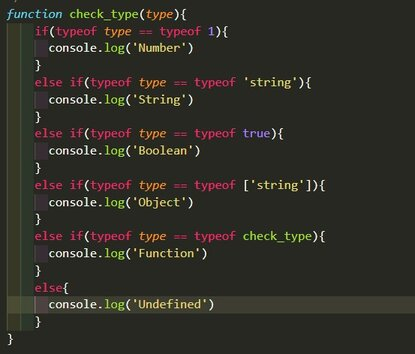

Notes:
- Always try to desgin moblie first.
- Keep in mind where the users can reach on mobile devices.
- Make sure to keep forms simple and clean.
- Local Storage is a good way to keep try of information that the user might want to save.
Questions:
- How often is localStorage used in the real world?
Exercises:
The screenshot down below is the function I made for one of the Javascript Exercises. I checked the type of value that goes into the function, then I output what the type is. If you would like to play around with the function, go under the folder week1, then under the js folder, then click on the week1 Javascript file.
